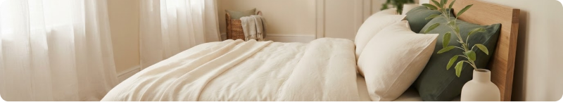
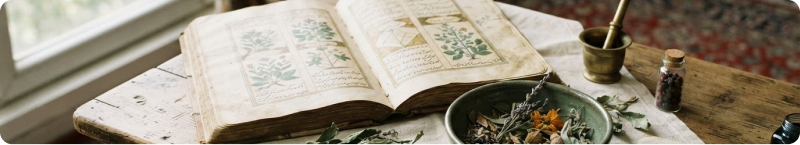

آموزش از منابع معتبر
دورههای عمومی طب ایرانی با مدرس متخصص و مرزبندی روشن با درمان و تجویز.
مشاهده دورهها ←مهریار / راهنمای سلامت و آموزش
دورههای عمومی طب ایرانی با مدرس متخصص و مرزبندی روشن با درمان و تجویز.
مشاهده دورهها ←مقایسه پزشکان، آدرس کلینیکها و انتخاب نوبت حضوری با زمانهای در دسترس.
یافتن کلینیک ←اطلاعات ساده و دقیق درباره اعضای بدن و نشانههایی که نیازمند پیگیریاند.
شروع گفتوگو ←کلینیکهای مهریار

کلینیک مرکزی ونک
امروز • ۱۶:۳۰ تا ۲۰:۰۰
کلینیک نیاوران
فردا • ۰۹:۳۰ تا ۱۳:۰۰
مرکز استان اصفهان
شنبه • ۱۵:۰۰ تا ۱۹:۰۰
کلینیک مرکزی ونک
یکشنبه • ۱۰:۰۰ تا ۱۴:۰۰کلینیک نیاوران
دوشنبه • ۱۷:۰۰ تا ۲۰:۰۰کلینیک مرکزی ونک
چهارشنبه • ۱۵:۳۰ تا ۱۹:۳۰
کلینیک نیاوران
پنجشنبه • ۰۹:۰۰ تا ۱۲:۰۰
مرکز استان اصفهان
شنبه • ۱۰:۳۰ تا ۱۳:۳۰
کلینیک مرکزی ونک
یکشنبه • ۱۶:۰۰ تا ۱۹:۰۰کلینیک نیاوران
دوشنبه • ۱۴:۰۰ تا ۱۸:۰۰آکادمی مهریار
آموزش کاربردی با مدرس متخصص، برای ساختن عادتهای روزمره آگاهانه.

نگاهی روشن به مراقبت روزمره و نقش تغییر فصل در سبک زندگی.

مرزبندی دقیق آموزش و درمان و دانشی برای گفتوگوی بهتر با پزشک.
برای شناخت قدم بعدی، آمادهشدن برای ویزیت و ثبت دقیق نشانهها.
از کجا شروع کنم؟